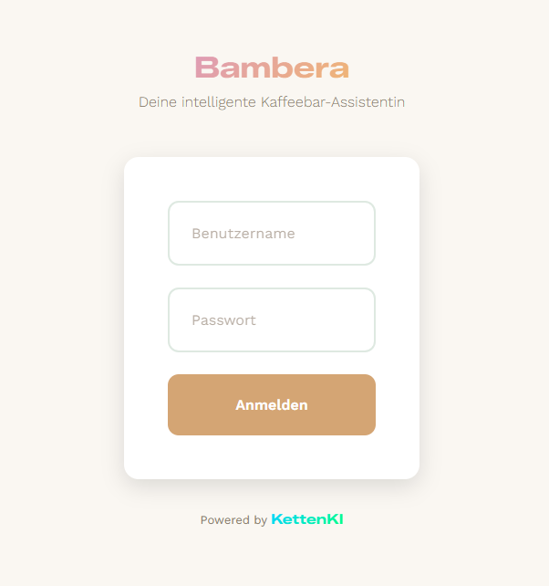
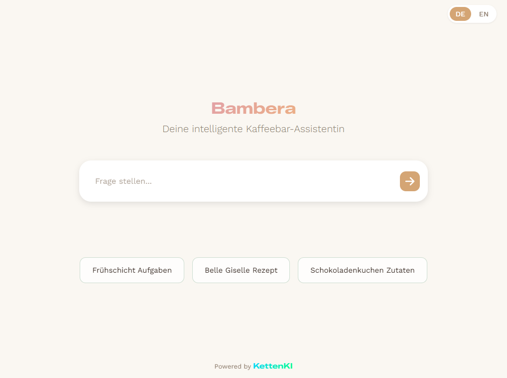
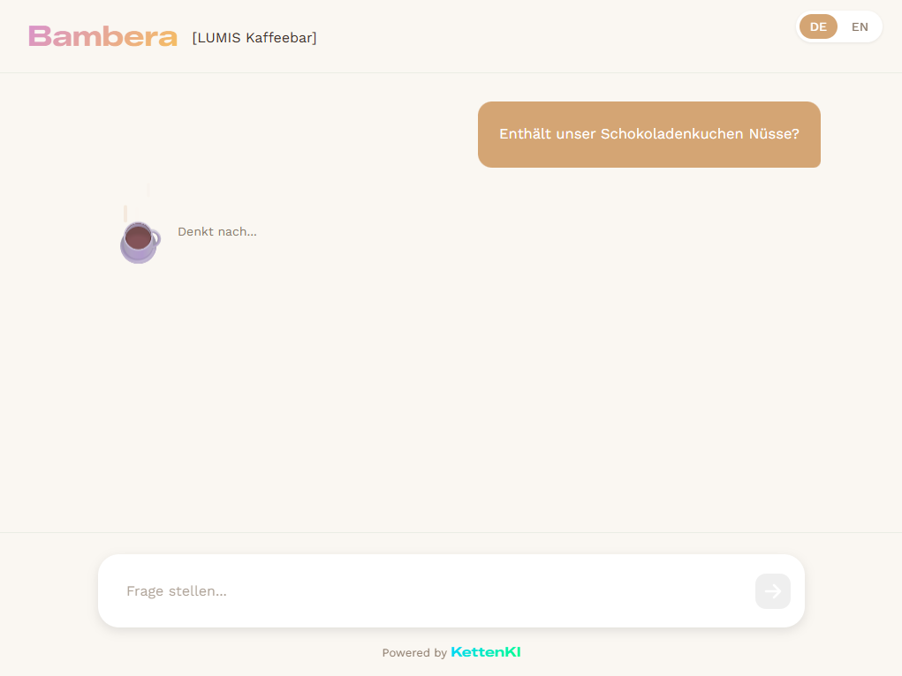
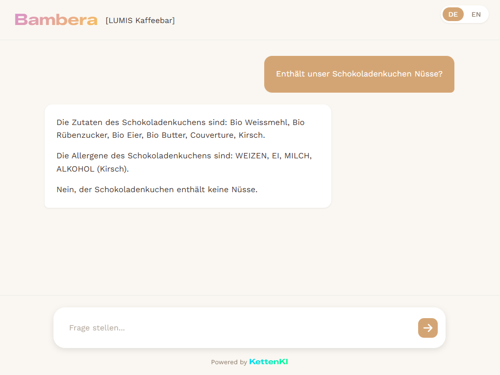
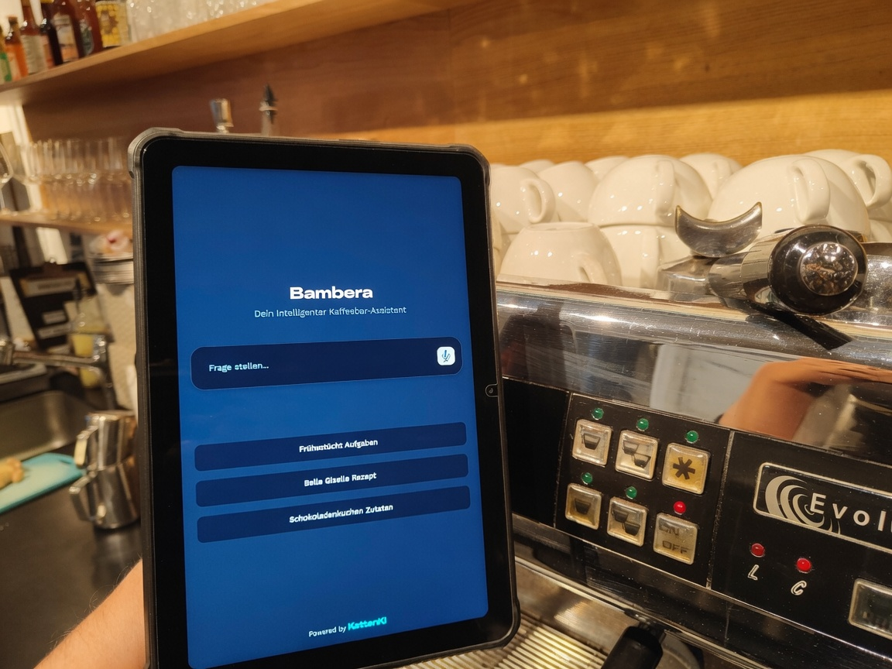
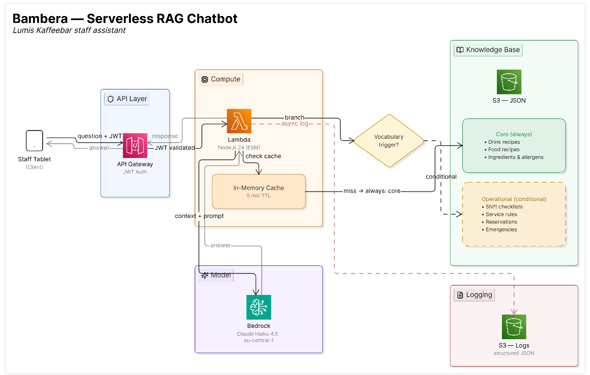

Bambera
RAG-Assistentin, die in unter 4 Sekunden antwortet, im echten Einsatz bei Lumis Kaffeebar
Kontext
Vor Bambera bedeutete jede Unklarheit während des Service (Enthält dieser Kuchen Nüsse? Wie macht man einen Hugo?), anzuhalten, zum gedruckten Handbuch zu greifen, das Inhaltsverzeichnis zu durchsuchen, die richtige Seite zu finden, während der Gast vor der Theke wartete und die Schlange dahinter wuchs. Bambera ersetzt dieses Buch: Es antwortet in unter 4 Sekunden, in der Sprache der Frage (Deutsch, Englisch, Französisch oder Spanisch), mit null Halluzinationen bei sicherheitskritischen Themen wie Allergenen. Am meisten genutzt wird es vom neuen Personal, für das Bambera wie ein sofortiges Onboarding funktioniert: Statt ein ganzes Handbuch auswendig lernen zu müssen, bevor man mit Sicherheit bedienen kann, fragt man einfach und bekommt die richtige Antwort sofort. Vor dem Produktivstart haben wir es einen ganzen Monat lang als Prototyp mit dem eigenen Team getestet, seit Februar 2026 ist es im echten Einsatz in der Lumis Kaffeebar (Bern).
Rundgang durch die Anwendung
Login
Der Zugang ist mit Benutzername und Passwort geschützt, da Bambera interne Betriebsdaten von Lumis Kaffeebar verarbeitet.

Startbildschirm
Der Startbildschirm zeigt vorgeschlagene Fragen basierend auf den häufigsten Anfragen (Aufgaben der Frühschicht, ein konkretes Rezept, Zutaten eines Produkts), damit das neue Personal beim ersten Mal nicht überlegen muss, was es überhaupt fragen soll.

Frage
Eine typische Frage aus dem Alltag: ob ein Produkt ein bestimmtes Allergen enthält. Genau das ist die Art von Frage, bei der eine falsche Antwort echte Konsequenzen hat, nicht nur kosmetische.

Antwort
Bambera antwortet in unter 4 Sekunden.

Im Einsatz
Und so sieht es in der Praxis aus: ein Tablet an der Theke, direkt neben der Kaffeemaschine, mitten im Service befragt.

Architektur

Die Anfrage des Personals kommt vom Tablet bei API Gateway an, das das JWT validiert, bevor es die Lambda aufruft. Die Lambda prüft zuerst einen In-Memory-Cache (TTL 5 Minuten); gibt es dort keinen Treffer, fragt sie die JSON-Dateien in S3 ab. Das Kernwissen (Rezepte, Zutaten und Allergene) wird immer in den Kontext aufgenommen; die operativen Abschnitte (Checklisten, Serviceregeln, Notfälle) werden nur hinzugefügt, wenn das Vokabular der Frage sie aktiviert, die Weiche, die die in der Technischen Herausforderung beschriebenen Routing-Bugs gelöst hat. Die Lambda ruft mit diesem Kontext Bedrock (Claude Haiku 4.5) auf, gibt die Antwort ans Personal zurück und protokolliert die Interaktion asynchron zurück in S3, ohne die Antwort an den Nutzer zu blockieren.
Stack
| Ebene | Technologie |
|---|---|
| Rechenleistung | AWS Lambda (Node.js 24, ESM) |
| Modell | Claude Haiku 4.5 über Amazon Bedrock (eu-central-1) |
| Wissensbasis | Amazon S3, 7 strukturierte JSON-Dateien |
| Authentifizierung | JWT, verwaltet von API Gateway |
Was ich gemacht habe
- Die komplette Pipeline entworfen und gebaut, von der API bis zum Prompt Engineering, mit Claude Haiku 4.5 auf Bedrock.
- Die Wissensbasis in 7 JSON-Dateien strukturiert (Rezepte, Zutaten und Allergene, Checklisten, Serviceregeln, Notfälle), mit expliziten booleschen Feldern (vegan, glutenfrei, laktosefrei), statt die Information nur im Fließtext zu belassen.
- Einen Datenfilter für Fragen zu Ernährungseigenschaften implementiert: statt sich nur darauf zu verlassen, dass das Modell ein boolesches Feld richtig interpretiert, filtere ich den Datensatz selbst, bevor er in den Prompt geht, damit das Modell erst gar nicht die Möglichkeit hat, Produkte außerhalb des angefragten Kriteriums zu sehen.
- Den System Prompt mit XML-Blöcken entworfen, nach den von Anthropic empfohlenen Praktiken für lange Kontexte, inklusive eines verpflichtenden Chain-of-Thought-Blocks für Allergenfragen: Das Modell muss Zutaten und Allergene explizit auflisten, bevor es eine Schlussfolgerung zieht, was ein Widerspruchsmuster beseitigte, das in frühen Versionen auftrat.
- Eine Testbatterie mit 100 Prompts und erwarteten Ergebnissen aufgebaut, um objektiv zu messen, ob eine Änderung die Antworten verbesserte oder verschlechterte.
- Das Routing-System für den Kontext komplett neu entworfen, nachdem eine Kaskade subtiler Bugs entdeckt wurde (siehe Technische Herausforderung).
Technische Herausforderung
Die erste Version nutzte ein Keyword-basiertes Routing-System, um zu entscheiden, welche Abschnitte der Wissensbasis je nach Frage an das Modell geschickt werden. Auf dem Papier klang das vernünftig, aber in Produktion erzeugte es eine Kaskade subtiler, schwer vorhersehbarer Bugs, von der Art, bei der ein kurzes Wort in einer Sprache mit einem Wortteil in einer anderen Sprache kollidiert. Die Lehre daraus war nicht, für jeden Fall mehr Logik draufzupacken, sondern die Architektur zu vereinfachen: das Kernwissen immer mitzuschicken und nur die selteneren operativen Abschnitte bedingt hinzuzufügen. Das bestätigte etwas, das ich schon vermutet hatte: In einem RAG-System zählt die Qualität des Kontexts mehr als seine Größe.
Ergebnis & Learnings
Ein Werkzeug, das das Team von Lumis täglich nutzt, seit Februar 2026 in Produktion. Es antwortet in unter 4 Sekunden, in vier Sprachen, mit einer messbaren und dank der Testbatterie aus 100 Prompts verbesserten Genauigkeit. Und der Beweis dafür, dass bei einem KI-Assistenten in einem echten Kontext, in dem eine falsche Antwort Konsequenzen haben kann (Lebensmittelsicherheit), der wichtigste Teil der Ingenieurarbeit nicht das Modell selbst ist, sondern der Prozess, der es vertrauenswürdig macht.